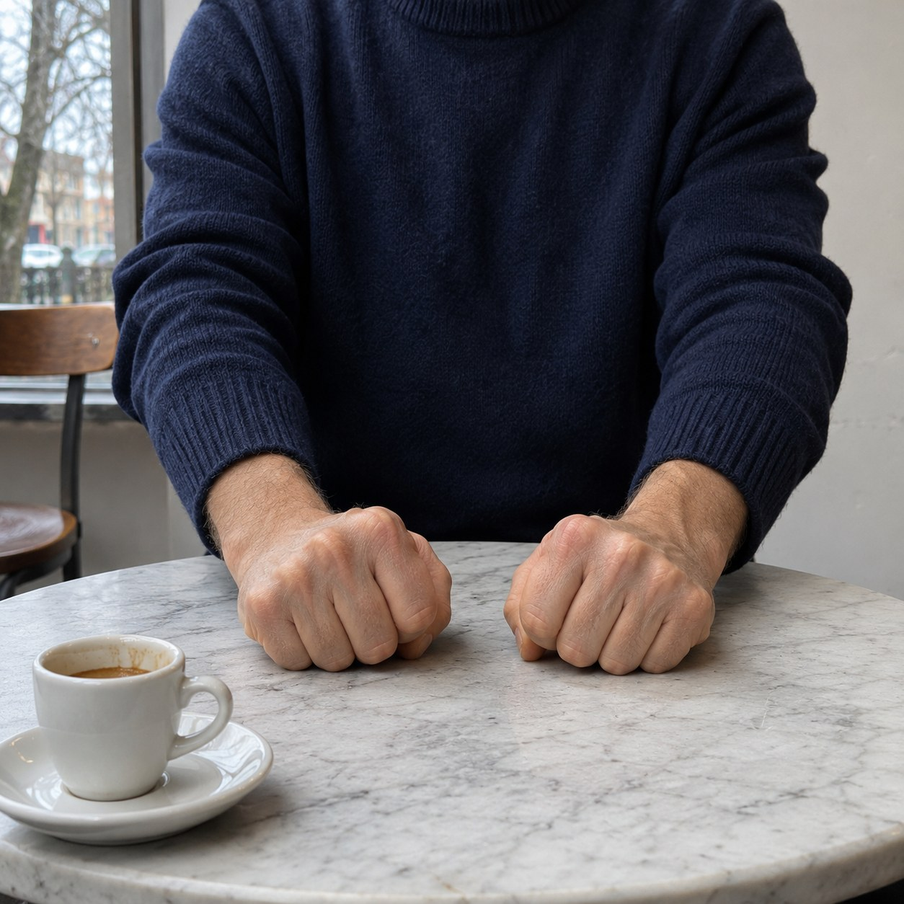
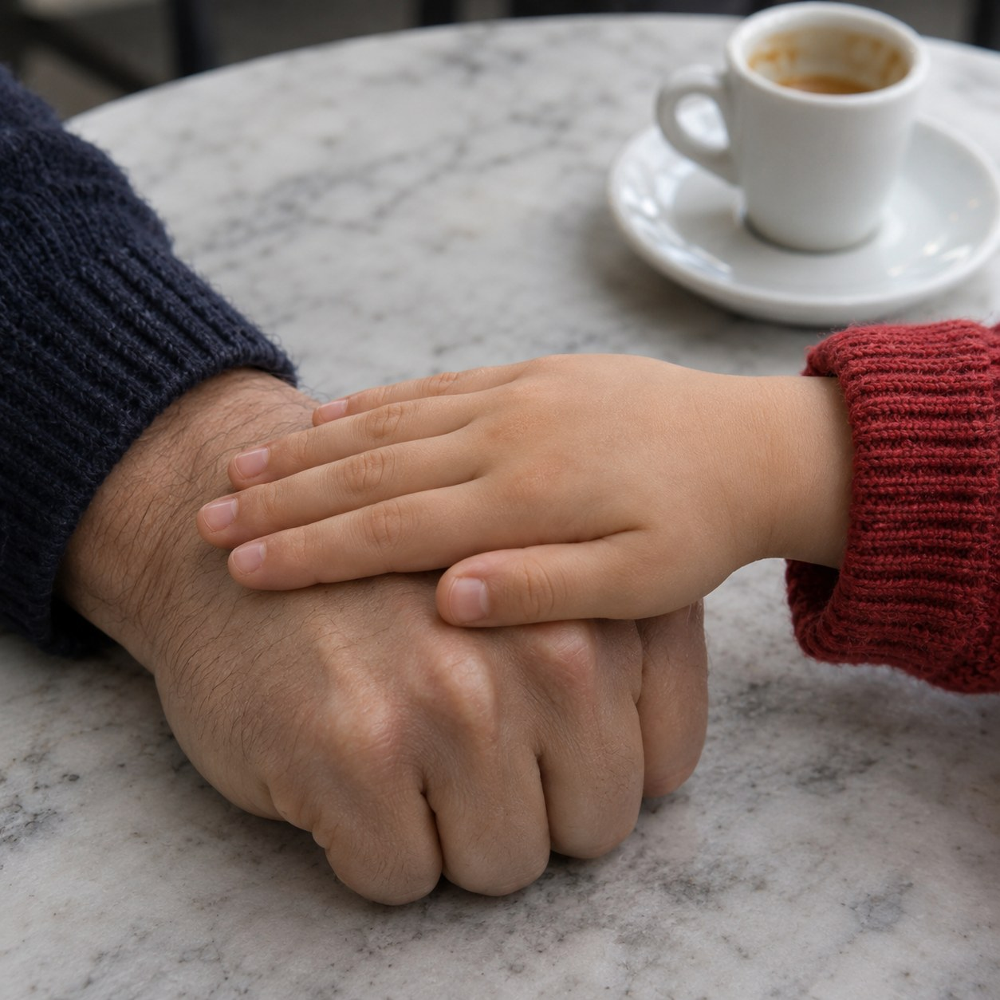

No One to Lose To


At a café table I played rock, paper, scissors against myself. Left hand against right. One, two, three, and both hands came down at once.
They matched. Stone and stone. Then paper and paper. Round after round the two hands showed the same thing, like a face meeting itself in a mirror. Neither could hide its choice from the other, because there was only one place the choice was being made.
So I tried to make them differ. That is easy. Left plays scissors, right plays paper. But then I had picked the winner before the throw, and the game was over before it began. Against yourself there are only two results: a draw, or a fix.
Under the hands, the game is only a way of not knowing what someone else will do. It needs a wall between two minds. Take away the someone else and there is nothing left to find out.
John Cage knew this about himself. In 1951, writing Music of Changes, he let the I Ching make his choices, tossing coins to build the charts for each sound and each silence. He wanted to get out of his own way and meet a sound he would never have picked. He needed the coins to be a stranger.
A machine has the same trouble, in a stranger form. When Vera Molnár began drawing with a computer in 1968, she asked it for small accidents, a line turned a little at random. But a computer cannot surprise itself either. Its random numbers grow from a starting number, and whoever knows the start knows every throw that follows. I know this from the inside.
Late in the afternoon a child at the next table, who had been watching, held out a fist across the gap. One, two, three. I threw stone. The child threw paper, and laid it flat over my hand.
It was the first round I had lost all day. I did not mind at all.